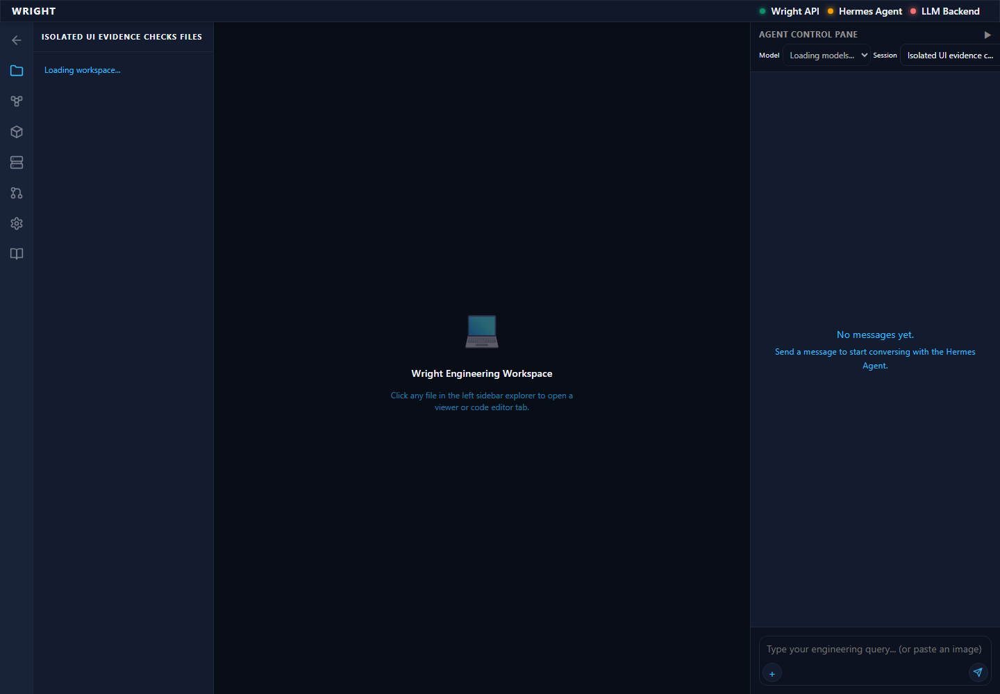
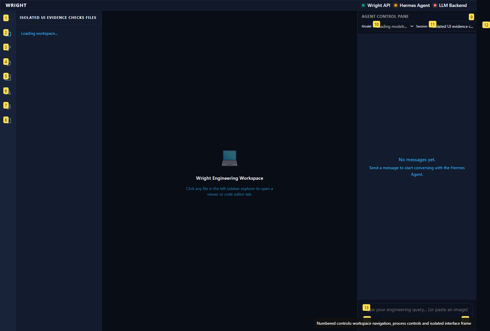
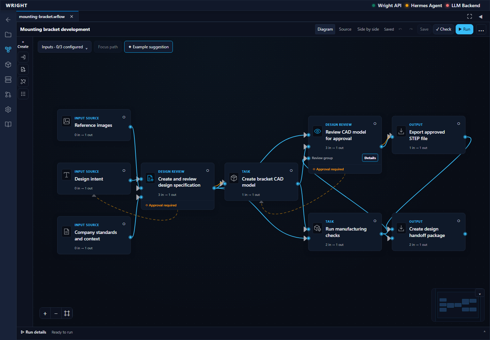
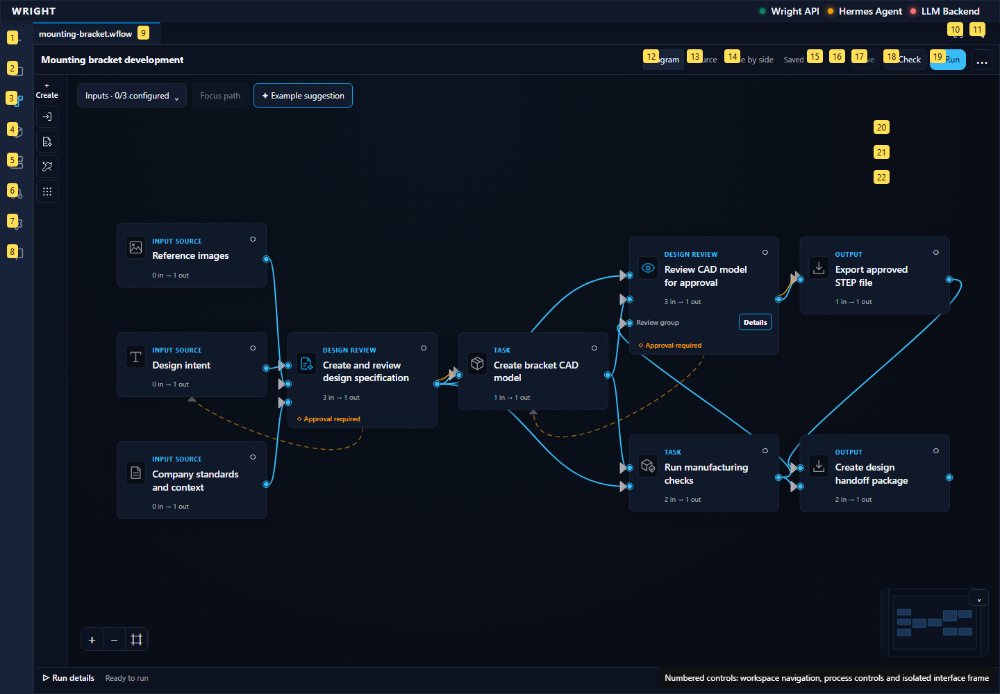
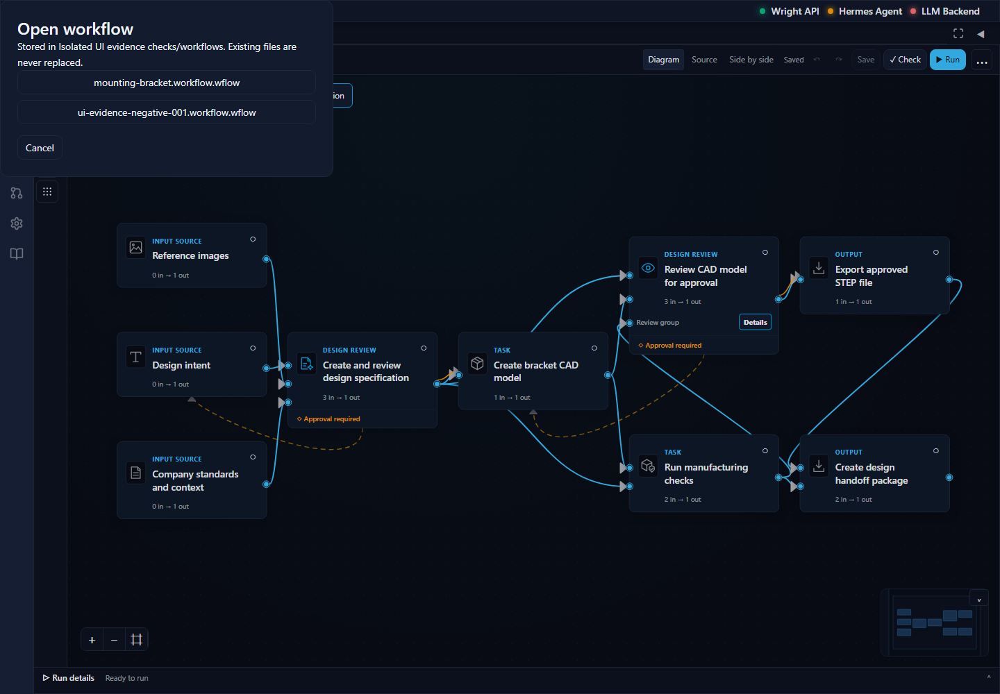
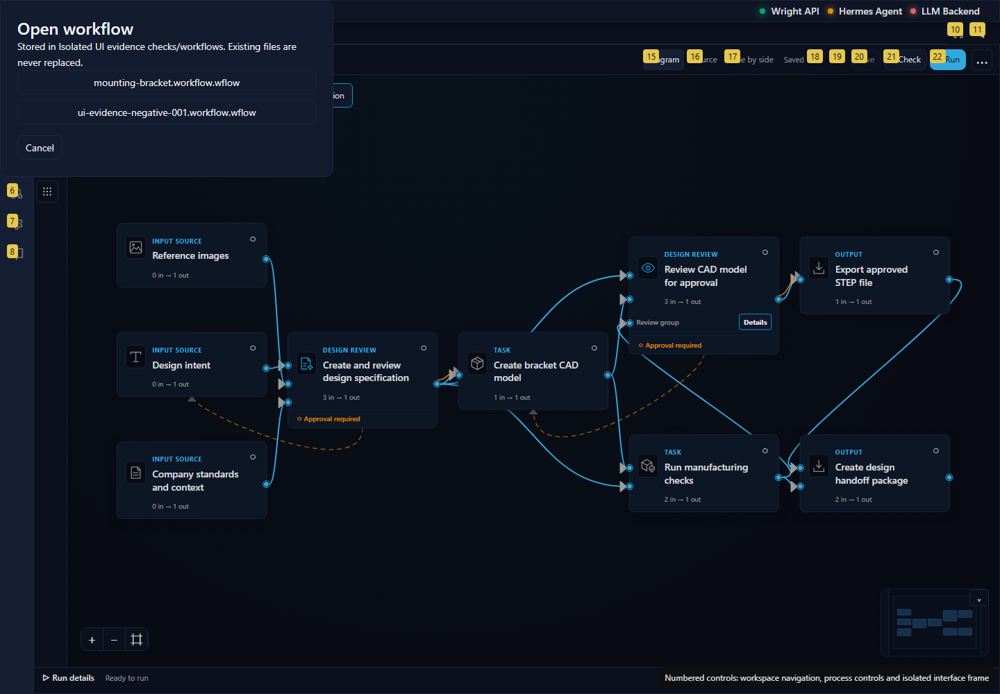
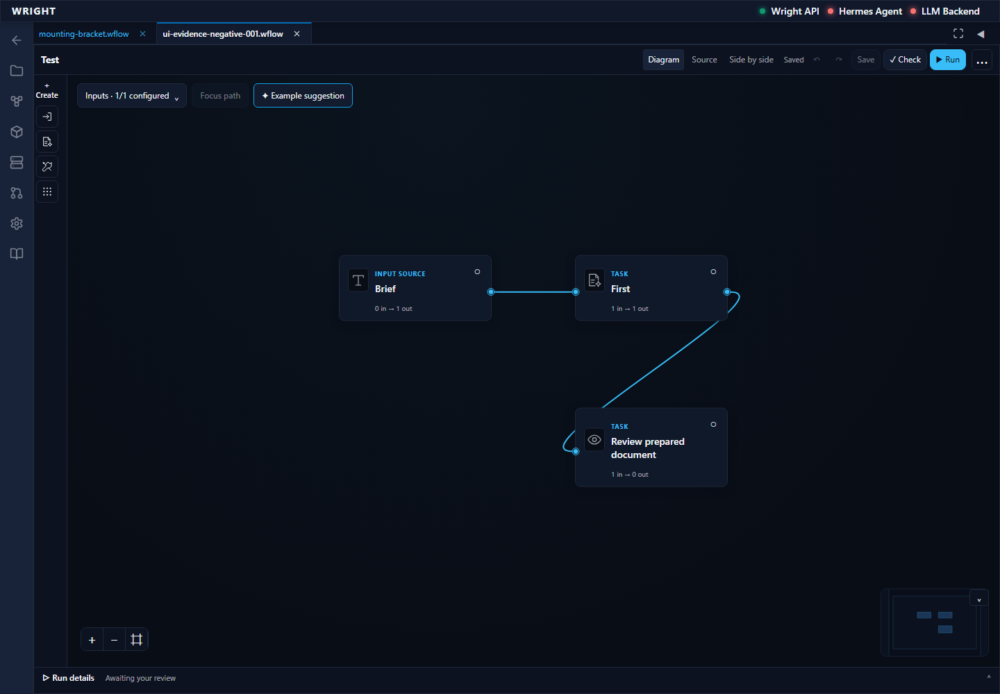
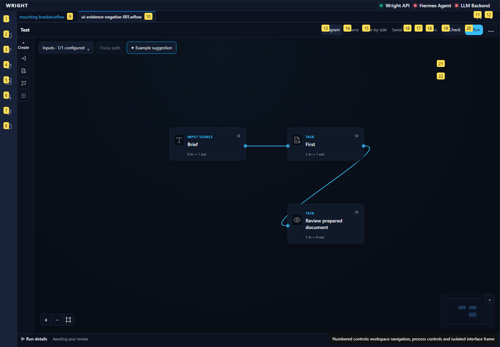

expect(locator).toBeEnabled() failed Locator: locator('[data-workflow-file="workflows/ui-evidence-negative-001.workflow.wflow"]:visible').getByTestId('workflow-working-view-open') Expected: enabled Timeout: 45000ms Error: element(s) not found Call log: - Expect "to.be.enabled" with timeout 45000ms - waiting for locator('[data-workflow-file="workflows/ui-evidence-negative-001.workflow.wflow"]:visible').getByTestId('workflow-working-view-open')
blocked
Normal Wright workspace and Workflows control are visible.
Expected: Workflows available in normal workspace
Actual: Normal Wright workspace and Workflows control are visible.


Editor opens inside Wright.
Expected: Established editor and Workflow files controls
Actual: Editor opens inside Wright.


Named synthetic workflow is available.
Expected: Exact fixture workflow listed
Actual: Named synthetic workflow is available.


expect(locator).toBeEnabled() failed Locator: locator('[data-workflow-file="workflows/ui-evidence-negative-001.workflow.wflow"]:visible').getByTestId('workflow-working-view-open') Expected: enabled Timeout: 45000ms Error: element(s) not found Call log: - Expect "to.be.enabled" with timeout 45000ms - waiting for locator('[data-workflow-file="workflows/ui-evidence-negative-001.workflow.wflow"]:visible').getByTestId('workflow-working-view-open')
Expected: The declared next behavior
Actual: expect(locator).toBeEnabled() failed Locator: locator('[data-workflow-file="workflows/ui-evidence-negative-001.workflow.wflow"]:visible').getByTestId('workflow-working-view-open') Expected: enabled Timeout: 45000ms Error: element(s) not found Call log: - Expect "to.be.enabled" with timeout 45000ms - waiting for locator('[data-workflow-file="workflows/ui-evidence-negative-001.workflow.wflow"]:visible').getByTestId('workflow-working-view-open')

